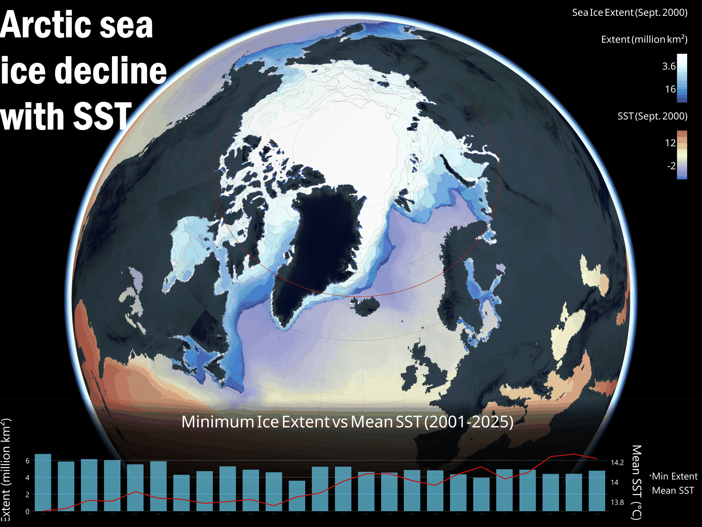

Arctic Sea Ice Decline with SST
Sea surface temperature and Arctic sea ice extent, drawn together — a polar global scene with the two records running as time series beneath it.

The question
Arctic sea ice loss is usually shown alone — a line going down. This puts the ice and the ocean underneath it in one frame, over the same period and the same projection.
Data
- Sea surface temperature — NOAA OISST v2.1 (
NOAA/CDR/OISST/V2_1) via Earth Engine, reduced to annual means and reprojected to EPSG:3413. - Sea ice extent — monthly polygon feature class carrying year, month, area, and extent.
Method
- Compute annual mean SST in Earth Engine; export as a multiband GeoTIFF, one band per year.
- Build a polar Global Scene in ArcGIS Pro, so the Arctic reads as a cap on a sphere rather than a distorted rectangle.
- Summarise ice to annual minimum extent — the September low is what tracks long-term loss, while an annual mean blends the winter maximum back in and damps the signal. Years without full monthly coverage are dropped, since an incomplete year returns a spuriously low minimum.
- Chart both series beneath the scene on independent left and right axes.
What it shows
From 2001 to 2025 minimum extent falls from roughly 6.8 to about 4.5 million km², with the 2012 collapse as the deepest trough. Mean SST rises a few tenths of a degree over the same window.
The two are not presented as a causal pair. Half a degree of averaged warming does not mechanically produce millions of km² of ice loss — that link runs through albedo feedback and ocean heat transport, neither of which appears here. The defensible claim is that the two records move together.